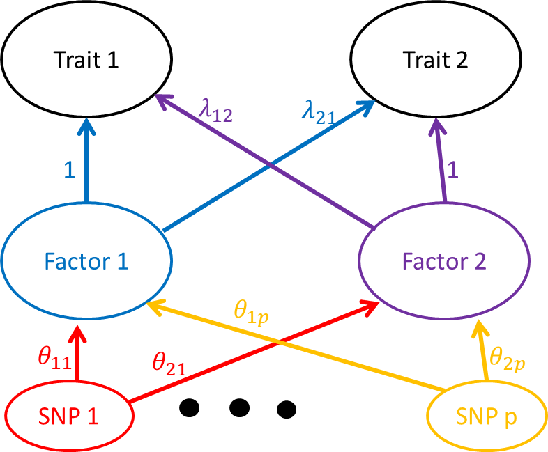

In this document I will describe the two factor model for assessing relationships between traits. This is an extension of what I called the “correlation approach” in these notes. Using the same notation as in that earlier document, the raw data are \(\hat{\beta}_1\), \(\hat{\beta}_2\), \(s_1\) and \(s_2\). Each of these is a length \(p\) vector. \(\hat{\beta}_{1j}\) and \(\hat{\beta}_{2j}\) give estimated effect sizes of SNP \(j\) on traits 1 and 2 respectively. \(s_{1j}\) and \(s_{2j}\) give the estimated standard errors of \(\hat{\beta}_{1j}\) and \(\hat{\beta}_{2j}\). Our model is as follows:
\[ \begin{pmatrix} \hat{\beta}_{1j}\\\hat{\beta}_{2j} \end{pmatrix} \sim N\left(\begin{pmatrix} \beta_{1j}\\\ \beta_{2j} \end{pmatrix} , \begin{pmatrix} s_{1j}^2 & \rho s_{1j}s_{2j} \\ \rho s_{1j}s_{2j} & s_{2j}^2 \end{pmatrix}\right) \] The parameter \(\rho\) captures correlation between estimates conditional on the true effect sizes. This might result from having overlapping samples or population structure that hasn’t been accounted for. Throughout, we will treat \(s_1\) and \(s_2\) as fixed and known.
We model the distribution of the true effects, \(\beta_{1j}\) and \(\beta_{2j}\) as \[ \begin{pmatrix} \beta_{1j}\\\ \beta_{2j} \end{pmatrix} = A\theta_j \] where \(A = \begin{pmatrix}1 & \lambda_{12}\\ \lambda_{21} & 1 \end{pmatrix}\) and \(\theta_j = (\theta_{1j}, \theta_{2j})^{\top}\). One graphical way of thinking of this model is this:

There are two factors with effects on two traits. \(\theta_{ij}\) is the effect of SNP j on factor \(i\). For identifiability, the SNP effects on factor \(i\) are scaled to the scale of SNP effects on trait \(i\) by setting the diagonal elements of \(A\) to be equal to 1. One way to think of this is that factor \(i\) is very similar to trait \(i\) and \(\lambda_{12}\) and \(\lambda_{21}\) are similar to the effect of trait 2 on trait 1 and vice-versa.
To fit the model, we estimate a prior for \(\theta_j\) from the data and then choose parameters \(\lambda_{12}\), \(\lambda_{21}\), and \(\rho\) to maximize the likelihood of the data. We can estimate the variance of these estimates using the derivative of the likelihood function. So far in this discussion we have assumed independence between SNPs but we will discuss this a little later on.
We assume that \(\theta_j\) has a distribution that is a mixture of \(k\) bivariate normal distributions
\[ P\left[ \begin{pmatrix} \theta_{1j}\\\ \theta_{2j} \end{pmatrix}\right] = \sum_{k=1}^{K} \pi_k N\left( \begin{pmatrix} \theta_{1j}\\\ \theta_{2j} \end{pmatrix}; \begin{pmatrix}0 \\0 \end{pmatrix}, U_k\ \right) \] where \(U_k = \begin{pmatrix}\sigma_{1k} & 0 \\ 0 & \sigma_{2k}\end{pmatrix}\). So far we have used two strategies for choosing the \(U_k\) and the \(\pi_k\):
\[ P[\theta_{2j}] = \sum_{k=1}^{k_2} \pi_k N(\theta_{2j}; 0, \sigma_{2, k}) \]
Joint prior for \(\theta_{1j}\) and \(\theta_{2j}\): In option 1 we assume that the distributions of SNP effects are independent. This might be violated, for example, if some SNPs are ``functional’’ and are more likely to have large effects across multiple traits. We have used two strategies to estimate a joint prior:
2a. Thin both grids, keeping only the variances associated with mixing proportions larger than a small threshold (e.g. \(10^{-10}\)). Form a grid of \(U_k\)s as diagonal 2x2 matrixces with elements equal to all combinations of the variances in the pruned grid. Estimate the mixing proportions for the \(U_k\)s using ASH machinery.
2b. Form a grid of \(U_k\)s using all combinations of the two (unthinned) grids. Use ASH machinery to estimate the mixing proportions for this large set of variance matrices, then thin the \(U_k\)s based on the mixing proportions.
In either case 2a or 2b, we estimate the mixing proportions twice. The first time we assume that \(\lambda_{12} = \lambda_{21} = \rho = 0\). We then estimate \(\rho\) assuming that \(\lambda_{12} = \lambda_{21} = 0\) and then re-estimate mixing proportions using the estimated value of \(\rho\). In practice we find little change between the first and second iteration.
In our first attempts to fit the model we used the following procedure:
We have since modified the procedure to the following:
Iterate until convergence:
This gives slightly better fits by allowing us to update the \(\pi_k\)s. In practice we find that only 2 or 3 iterations are usually required.
By integrating out \(\theta_{1}\) and \(\theta_{2}\) we can write the likelihood of the pair of effect estimates for one SNP as
\[ P\left(\begin{pmatrix} \hat{\beta}_{1j}\\\hat{\beta}_{2j}\end{pmatrix} \vert \lambda_{12}, \lambda_{21}, \rho \right) = \sum_{k=1}^{K} \pi_k N\left( \begin{pmatrix} \hat{\beta}_{1j}\\\ \hat{\beta}_{2j} \end{pmatrix}; \begin{pmatrix}0 \\0 \end{pmatrix}, AU_kA^{\top} + S_j\ \right) \]
where \(S_j = \begin{pmatrix} s_{1j}^2 & \rho s_{1j}s_{2j} \\ \rho s_{1j}s_{2j} & s_{2j}^2 \end{pmatrix}\). The total likelihood is then \[ L(\lambda_{12}, \lambda_{21}, \rho) = \prod_{j=1}^{p} P\left(\begin{pmatrix} \hat{\beta}_{1j}\\\hat{\beta}_{2j}\end{pmatrix} \vert \lambda_{12}, \lambda_{21}, \rho \right). \] Below, I discuss weights that can be added to the likelihood to account for LD.
We are especially interested in hypotheses about whether one or both of \(\lambda_{12}\) and \(\lambda_{21}\) are equal to zero. To assess this we fit the model under four sets of constraints:
We can then compare models using either BIC or a likelihood ratio test.
So far, the model has assumed that SNPs are independent, however, we know that the effect of SNP \(j\) is likely to be similar to the effects of the SNPs that in close LD with it. Dependence between SNPs will lead to underestimates of the variance of the parameter estimates if we don’t account for it. Placing a joint prior on \(\theta_1, \dots, \theta_{p}\) would be intractible. Instead, we use two strategies to try to get better variance estimates:
Pruning based on an LD threshold. This also has the effect of dramatically reducing the number of SNPs and speeding up computations.
Incorporating weights into the likelihood. Rather than calculating the likelihood as \[ L(\lambda_{12}, \lambda_{21}, \rho \vert \hat{\beta}_1, \hat{\beta}_2, s_1, s_2) = \prod_{j=1}^{p} P(\hat{\beta}_{1j}, \hat{\beta}_{2j} \vert \lambda_{12}, \lambda_{21}, \rho, s_{1j}, s_{2j}) \] we use
\[ L(\lambda_{12}, \lambda_{21}, \rho \vert \hat{\beta}_1, \hat{\beta}_2, s_1, s_2) = \prod_{j=1}^{p} \left(P(\hat{\beta}_{1j}, \hat{\beta}_{2j} \vert \lambda_{12}, \lambda_{21}, \rho, s_{1j}, s_{2j})\right)^{w_j} \] where \(w_j\) is a weight less than 1. Intuitively, \(w_j\) reduces the contribution of a SNP with many neighbors in close LD. We use weights calculated by the LDAK program. These weights have the property that if \(N\) SNPs are in perfect LD, each SNP will recieve a weight of \(1/N\) so that cumulatively, the block only gets one “vote” in the likelihood rather than \(N\).
This R Markdown site was created with workflowr